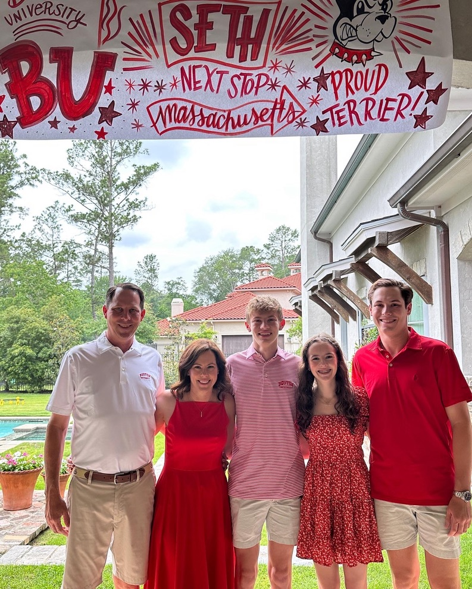

Education
I am a junior at Boston University with a joint major in Statistics and Computer Science and a minor in Economics. I am also taking masters classes in Earth and Environment. At BU, I'm a member of the Sigma Chi Fraternity and the Kappa Theta Pi Professional Technology Fraternity.
I attended The Woodlands Christian Academy in The Woodlands, Texas, for high school. I was part of the basketball, track, and two time state champion cross country teams. During my senior year, I was awarded the National Merit Scholarship — a scholarship awarded to the top 1% of PSAT test takers — by College Board.
